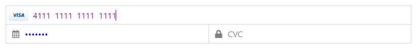
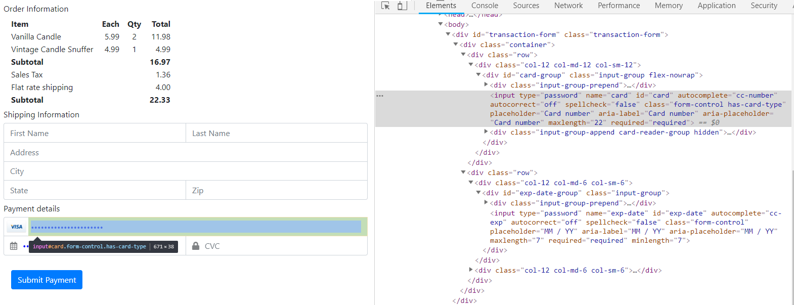
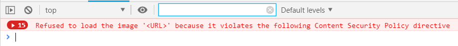

Styling / Branding
The Clearent JavaScript SDK iframe contents can be styled by setting the styles attribute in the call to the ClearentSDK.init() method.
<script type="text/javascript">
ClearentSDK.init({
"baseUrl": "https://gateway-sb.clearent.net",
"pk": "YOUR PUBLIC KEY GOES HERE",
"styles": ".form-control{color: blue;}.form-control:focus{color: purple;}"
});
</script>
The above styles will generate a form with blue text in the input fields that show as purple when focused.
You can use your developer toolbar to access the element classes, ids, and structure to help you build any override styles.
By default, all style attributes are allowed. Any style that references external resources will be disallowed because an external resource could be used in inject a scripting attack.
The following example that attempts to set a background-url to an external resource will be blocked.
<script type="text/javascript">
ClearentSDK.init({
"baseUrl": "https://gateway-sb.clearent.net",
"pk": "YOUR PUBLIC KEY GOES HERE",
"styles": ".form-control{background: url('http://bad-guy-server/evil-endpoint/logo.jpg');}"
});
</script>
Attempting to set external resource or data/blob content values will generate errors and that style will be ignored.
